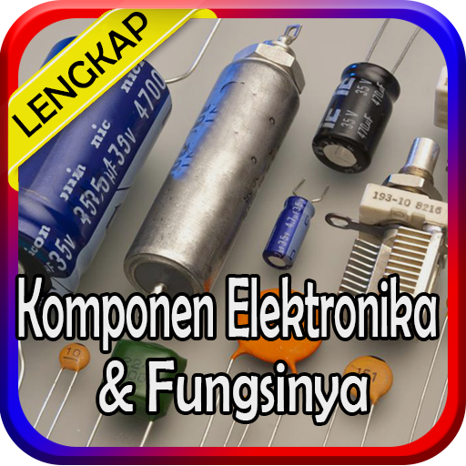

Komponen Elektronika
1. Penemuan Listrik & Penemu Listrik
2. Bagian – Bagian Motor Listrik
3. Pengertian Integrated Circuit (IC)
4. Pengertian Transistor Darlington
5. Mikroprosesor Dan Mikrokontroler
6. Pengertian Baterai Dan Jenisnya
7. Pengertian Transformator
8. Pengertian Relay Dan Fungsi
9. Fungsi Dioda Dan Cara Mengukur
10. Transistor Dan Jenisnya
11. Field Effect Transistor
12. Pengertian Phototransistor
13. Pengertian PCB Dan Fungsinya
14. Pengertian Dioda Dan Jenisnya
15. Pengertian Induktor Dan Fungsi
16. Pengertian Komponen Elektronika
17. Jenis Komponen Elektronika
18. Perbedaan MCB Dan MCCB
19. Listrik 1 Phase Dan 3 Phase
20. Pengertian Tahanan Listrik
21. Pengertian Kapasitansi
22. Pengertian Resistor Film Metal
23. Pengertian & Fungsi Sensor LDR
24. Jenis – Jenis Sensor LDR
25. Jenis Dan Fungsi Potensiometer
26. Prinsip Kerja Motor Listrik
27. Pengertian Sensor Proximity
28. Dasar – Dasar Fiber Optik
29. Aplikasi Fiber Optik
30. Tips Komponen Elektronika
31. Rangkaian Elektronik Sederhana